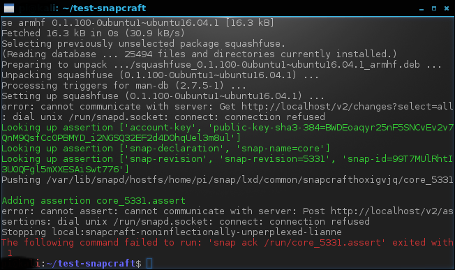
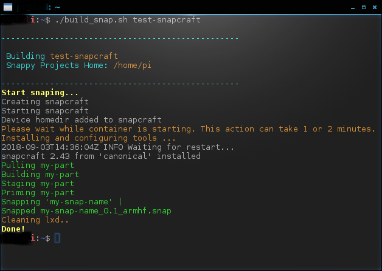
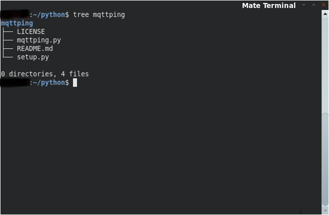
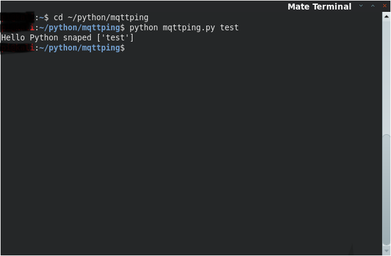

Building linux snaps with Snapcraft
Building linux snaps with SnapcraftInstalling SnapcraftKALI Linux on Raspberry PI 3Install SNAPDGet SnapcraftLinux ContainersSetup LXDConfigure LXDTest a container buildMaking it workBuilding your first snapBulding a python snapPython Package StructurePython CodeHosting at GithubCreate a repositoryAdd and maintain your projectBuilding SnapSetup a snap projectInitialize projectSetup snapcraft.yamlBuild your snap
Installing Snapcraft
KALI Linux on Raspberry PI 3
In order to run Snapcraft, it's a good idea install first snapd.
Install SNAPD
sudo apt updatesudo apt install snapdif you plan to use sound system, install also pulseaudio.
xxxxxxxxxxsudo apt install pulseaudioGet Snapcraft
Get snapcraft and isntall using snapd system
xxxxxxxxxxsnap install snapcraft --classicand confirm version
xxxxxxxxxxsnapcraft --versionLinux Containers
LXD is a next generation system container manager. It offers a user experience similar to virtual machines but using Linux containers instead.
https://linuxcontainers.org/lxd/introduction/
Setup LXD
The best way of preserving compatibility with linux versions is compiling using containers. This is why we need to install LXD.
xxxxxxxxxxsudo snap install lxdLXD requires that your user is in the lxd group
xxxxxxxxxxsudo usermod -aG lxd ${USER}newgrp lxdConfigure LXD
Configuration of the LXD defaults can be done via the init option. Typically accepting the default prompts is sufficient to get a working LXD configuration, usable by snapcraft on the same host
xxxxxxxxxxlxd initTest that LXD (and the lxc client) are correctly installed by starting a container
xxxxxxxxxxlxc launch ubuntu:16.04 testIf everything is ok, you should see a container named tes when listing containers
xxxxxxxxxxlxc listand then you can stop and delete test container.
xxxxxxxxxxlxc stop testlxc delete test
Test a container build
Following docs available in snapcraft.io, we could test that everything is setup correctly with a few commands in a new directory
xxxxxxxxxxmkdir test-snapcraftcd test-snapcraftsnapcraft initand then,
xxxxxxxxxxsnapcraft cleanbuildhowever, this ended with an error:

this is because we are running lxd unprivilege.
Making it work
As a work arround for this situatio, we made a script that creates the container in privilege mode and run snapcraft.
Bash script build_snapcraft.sh:
x############################### Terminal Color Codes############################### ResetColor_Off='\033[0m' # Text Reset# Regular ColorsRed='\033[0;31m' # RedYellow='\033[0;33m' # YellowCyan='\033[0;36m' # CyanWhite='\033[0;37m' # White# BoldBRed='\033[1;31m' # RedBYellow='\033[1;33m' # YellowBCyan='\033[1;36m' # CyanBWhite='\033[1;37m' # White# BackgroundOn_Black='\033[40m' # BlackOn_Red='\033[41m' # RedOn_Yellow='\033[43m' # YellowOn_Cyan='\033[46m' # CyanOn_White='\033[47m' # White######################## Vars#######################SNAPPY_PROJECTS=$(pwd)if [ -z "$1" ]; then echo -e "${BRed}Error: ${Yellow}1 Argument missing. Snap project folder is mandatory. $Color_Off" exitfiPROJECT_FOLDER=$1####################### Main######################echo -e "$Cyan"echo -e "-------------------------------------------------"echo -e ""echo -e " Building ${Yellow}$PROJECT_FOLDER $Cyan"echo -e " Snappy Projects Home: ${Yellow}$SNAPPY_PROJECTS $Cyan"echo -e ""echo -e "------------------------------------------------- $Color_Off"echo -e "${BYellow}Start snaping... $Color_Off"lxc launch ubuntu:16.04 snapcraft -c security.privileged=true && \#lxc config profile set default security.privileged truelxc config device add snapcraft homedir disk source=$SNAPPY_PROJECTS path=/home/ubuntu && \echo -e "${Yellow}Please wait while container is starting. This action can take 1 or 2 minutes. $Color_Off"sleep 20lxc exec snapcraft -- snap install snapcraft --classic >/dev/null 2>&1echo -e "${Yellow}Installing and configuring tools ... $Color_Off"lxc exec snapcraft -- snap install snapcraft --classic && \lxc exec snapcraft -- sh -c "cd /home/ubuntu/$PROJECT_FOLDER; snapcraft" && \echo -e "${Yellow}Cleaning lxd.. $Color_Off"lxc stop snapcraft && \lxc delete snapcraft && \echo -e "${BYellow}Done! $Color_Off"and that's it.
Building your first snap
Just make it executable and run it with the snap project folder as parameter like this:
xxxxxxxxxx./build_snap.sh test_snaphere is what you will get

and a new snap was created at test_snap ready to install. if you need to rebuild, it's a good idea cleanin parts, prime and stage folders.
Bulding a python snap
Before we start building a python snap, we have create and understand a very basic python package structure. Snapcraft will use this structure later to build your snap.
Python Package Structure
To use as an example, I will build a simple python package structure to use as an example. You can find detailed information here . I will also use my github as source repository because snapcraft can use git to download source code.
The package name will be mqttping, and for now, it will just print a message on a screen, receiving one paramater. I created a folder in my home dir to work in all my python packages.
xxxxxxxxxxmkdir ~/pythonand also create the package folder
xxxxxxxxxxmkdir ~/python/mqttpingA basic structure will have 4 files:
LICENSE - This file is optional and has the text with the license of our code. You can get more info about open source lincensing here
README.md - This file is optional and is used by github to give some information about the package and how it works. This is a kind of a manual.
mqttping.py - Our python code. This is mandatory :)
setup.py - This file has methods related with package installation and entry point for the aplication.Also mandatory.
here is the the structure:

Python Code
You can put what ever you want in README.md and LICENSE files, as I said it's optional.
mqttping is the main file. Here is the main code of our package.
xxxxxxxxxx#!/usr/bin/env python# coding: utf-8# References:# https://opensource.org/licensesimport osimport sys__version__ = '0.1.1'def quit(s, code=0): if s is not None: print(s) sys.exit(code)def print_help(): help = """Usage: mqttping <test string>"""[1:-1] print(help)def main(): args = sys.argv[1:] if not args: print_help() quit(None, 0) print("Hello Python snaped {}".format(args))if __name__ == '__main__': main()setup.py is the setup code, as I said before, has information about how this can be installed with python pip tool. Later we will see what changes we must to implement in our snapcraft bash script in order to fullfill all python dependencies requests. Here is the content of setup.py
xxxxxxxxxx#!/usr/bin/env python# coding=utf-8from setuptools import setuppackage_name = 'mqttping'filename = package_name + '.py'def get_version(): import ast with open(filename) as input_file: for line in input_file: if line.startswith('__version__'): return ast.parse(line).body[0].value.sdef get_long_description(): try: with open('README.md', 'r') as f: return f.read() except IOError: return ''setup( name=package_name, version=get_version(), author='Your_name', author_email='your_email', description='mqtt ping test', url='https://github.com/your_git_user/mqttping', long_description=get_long_description(), py_modules=[package_name], entry_points={ 'console_scripts': [ 'mqttping = mqttping:main' ] }, license='License :: OSI Approved :: MIT License',)and we have all code we need. From the command line you can test your python package.
xxxxxxxxxxcd ~/python/mqttpingpython mqttping.py testHere is the expected result

Hosting at Github
GitHub is a code hosting platform for version control and collaboration. It lets you and others work together on projects from anywhere. I will show only the basic steps to move and maintain this python code on github. You can learn much more here.
Create a repository
A repository is usually used to organize a single project. Repositories can contain folders and files, images, videos, spreadsheets, and data sets – anything your project needs. We recommend including a README, or a file with information about your project. GitHub makes it easy to add one at the same time you create your new repository. It also offers other common options such as a license file.
To create a repository follow this steps:
In the upper right corner, next to your avatar or identicon, click and then select New repository.
Name your repository
mqttping.Write a short description.
Click Create repository and that's all.
Add and maintain your project
To the next steps, you need to install git command line if you don't have it already. You can find how to install it here.
To add your files, you need to initialize the project folder and only then, you will be able to host all your files. There's how you can do it.
xxxxxxxxxxcd ~/python/mqttpingugit initgit add README.md LICENSE mqttping.py setup.pygit commit -m "first commit"git config --global user.email "<your email>"git config --global user.name "<your git username>"git remote add origin https://github.com/<your_git>/mqttping.gitgit push -u origin masteryou will need to provide your git username and password if asked.
every time you change files, you will need to commit changes and add the files again. For instance, if you make any change to mqttping.py, you will need to do the following:
xxxxxxxxxxgit add mqttping.pygit commit -m "your comment to the change"git pushBuilding Snap
To build mqttping snap, we need to use snapcraft and the the bash script we created before in this tutorial. Because we are going to build a python snap and snapcraft uses pip to install python app on lxd container, we need to include an instruction to install pip on lxc after installing snapcraft. This is done by adding lxc exec snapcraft -- sh -c "apt update && apt install python-pip -y" && \ to build_snap.sh.
xxxxxxxxxx############################### Terminal Color Codes############################### ResetColor_Off='\033[0m' # Text Reset# Regular ColorsRed='\033[0;31m' # RedYellow='\033[0;33m' # YellowCyan='\033[0;36m' # CyanWhite='\033[0;37m' # White# BoldBRed='\033[1;31m' # RedBYellow='\033[1;33m' # YellowBCyan='\033[1;36m' # CyanBWhite='\033[1;37m' # White# BackgroundOn_Black='\033[40m' # BlackOn_Red='\033[41m' # RedOn_Yellow='\033[43m' # YellowOn_Cyan='\033[46m' # CyanOn_White='\033[47m' # White######################## Vars#######################SNAPPY_PROJECTS=$(pwd)if [ -z "$1" ]; then echo -e "${BRed}Error: ${Yellow}1 Argument missing. Snap project folder is mandatory. $Color_Off" exitfiPROJECT_FOLDER=$1####################### Main######################echo -e "$Cyan"echo -e "-------------------------------------------------"echo -e ""echo -e " Building ${Yellow}$PROJECT_FOLDER $Cyan"echo -e " Snappy Projects Home: ${Yellow}$SNAPPY_PROJECTS $Cyan"echo -e ""echo -e "------------------------------------------------- $Color_Off"echo -e "${BYellow}Start snaping... $Color_Off"lxc launch ubuntu:16.04 snapcraft -c security.privileged=true && \lxc config device add snapcraft homedir disk source=$SNAPPY_PROJECTS path=/home/ubuntu && \echo -e "${Yellow}Please wait while container is starting. This action can take 1 or 2 minutes. $Color_Off"sleep 20lxc exec snapcraft -- snap install snapcraft --classic >/dev/null 2>&1echo -e "${Yellow}Installing and configuring tools ... $Color_Off"lxc exec snapcraft -- snap install snapcraft --classic && \## For python packages## to install pip in this containerlxc exec snapcraft -- sh -c "apt update && apt install python-pip -y" && \## end pythonlxc exec snapcraft -- sh -c "cd /home/ubuntu/$PROJECT_FOLDER; snapcraft" && \echo -e "${Yellow}Cleaning lxd.. $Color_Off"lxc stop snapcraft && \lxc delete snapcraft && \echo -e "${BYellow}Done! $Color_Off"Setup a snap project
Now, it's time to create our snap project and setup configuration file (yaml file) to include mqttping python app.
Initialize project
xxxxxxxxxxcd ~mkdir mqttping-snapcd ~/mqttping-snapsnapcraft initSetup snapcraft.yaml
Edit snapcraft.yaml located in ~/mqttping-snap/snap to look like the following:
xxxxxxxxxxnamemqttping # you probably want to 'snapcraft register <name>'version'0.1' # just for humans, typically '1.2+git' or '1.3.2'summarySingle-line elevator pitch for your amazing snap # 79 char long summarydescription This is my-snap's description. You have a paragraph or two to tell the most important story about your snap. Keep it under 100 words though, we live in tweetspace and your description wants to look good in the snap store.gradestable # must be 'stable' to release into candidate/stable channelsconfinementdevmode # use 'strict' once you have the right plugs and slotsparts mqttping sourcehttps//github.com/your_github_user/mqttping.git # See 'snapcraft plugins' pluginpython python-versionpython2apps mqttping commandmqttpingImportant paramaters to change or include:
name: The name of your project. In this case mqttping
parts: Remove nill and insert mqttping: part like this:
xxxxxxxxxxparts mqttping sourcehttps//github.com/your_github_user/mqttping.git # See 'snapcraft plugins' pluginpython python-versionpython2source: The github link to your repo
plugin: This is a python app, isn't it? so .. python
python-version: By default, snapcraft use python3. If you need to force to use python 2, this is the right place.
apps: Insert this parameter to name and install your app like this
xxxxxxxxxxapps mqttping commandmqttpingand it's all set.
Build your snap
to build your snap, just run the build_snap.sh
xxxxxxxxxxcd ~./build_snap.sh mqttping-snap